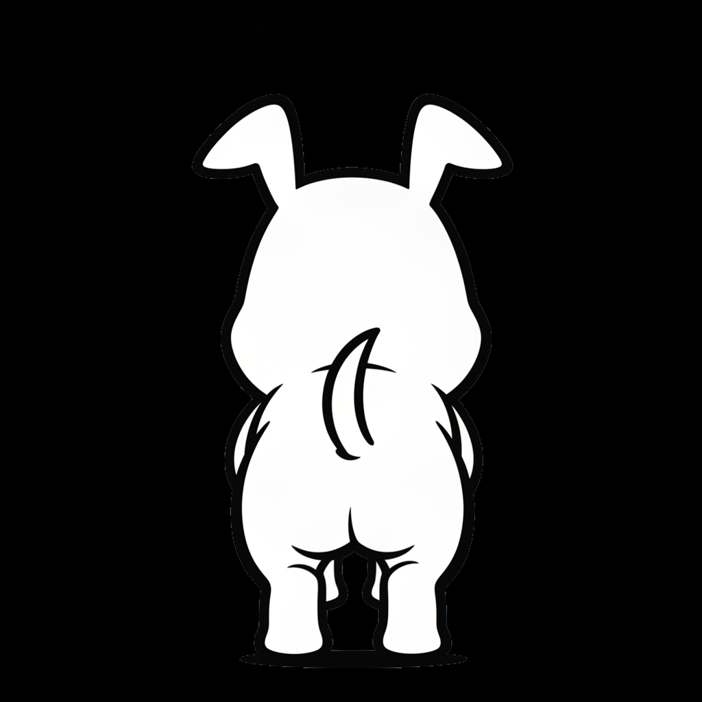

← Animal IQ Labo トップ
動物の五感 ｜ 🐶 犬
犬のしっぽ左右振り分け——右は好意・左は警戒の科学的根拠
最終更新：2026-03
愛犬がしっぽを振っているとき、「喜んでいるんだな」と思うのが普通です。しかし実は、しっぽが振れる方向——右寄りか左寄りか——によって、犬の気持ちはまったく違うことが研究でわかっています。左右差の裏にある脳のしくみを解説します。
💡 この記事でわかること
- しっぽの振り幅の偏り（右振り・左振り）で感情の種類が変わること
- 左右差が「脳の機能局在（役割分担）」に由来する神経学的な仕組み
- 相手の反応（飼い主・知らない人・大型犬など）による観察実験結果
- 日常で愛犬のしっぽの向きを正しく見分ける観察ポイント
① 右に振れば好意、左に振れば警戒
犬の体を後ろ（お尻側）から観察したとき、しっぽが右側に大きく振れている場合は、リラックスして好意的な気持ちを表しています。逆に左側に大きく振れているときは、不安や警戒心が高まっているサインです。

しっぽの振れ幅の偏りは感情のシグナル
👉
右寄り振り
好意・安心・喜び飼い主との再会や遊びの場面
👈
左寄り振り
警戒・不安・緊張見知らぬ大型犬や危険を感じる状況
② なぜ左右で違うのか——脳の役割分担
人間の脳で言語領域や空間認識の左右差があるのと同様に、犬の脳にも感情処理の明確な役割分担が存在します。近づきたいという前向きな感情は「左脳」、回避したいという後ろ向きな感情は「右脳」が主に担当しています。
🧠 交叉支配の神経メカニズム
脳からの運動指令は体を交叉して届きます。前向きな感情で左脳が優位に働くと体の右側の筋肉が活性化してしっぽが右へ寄り、警戒心で右脳が優位になると左側の筋肉が活性化して左へ寄る仕組みです。
③ 実験で証明された対人・対犬の反応パターン
2007年の研究では、犬に多様な刺激を見せた際のしっぽの偏りが計測されました。また2013年の研究では、他の犬の「左振り映像」を見た犬の心拍数が上昇するなど、犬同士の通信手段としても機能していることが裏付けられています。
| 特徴 |
右振り（右寄り） |
左振り（左寄り） |
| 関連する感情 |
好意・安心・喜び |
警戒・不安・緊張 |
| 優位に働く脳 |
左脳（接近・親和系） |
右脳（回避・警戒系） |
| 主な刺激源 |
飼い主、親しい人 |
見知らぬ大型犬、威嚇的な相手 |
| 振れ幅の傾向 |
大きく元気に振れる |
小さく低い位置で硬く振れる |
 元気に走る犬。感情の動きはしっぽの細かなニュアンスに直結する
元気に走る犬。感情の動きはしっぽの細かなニュアンスに直結する
④ 日常で観察する際のポイント
愛犬の観察時は正面からではなく「真後ろ（お尻側）」からしっぽの付け根を見るのが基本です。巻き尾や短尾の犬種であっても、付け根のわずかな傾きを観察することで判断が可能です。
よくある質問
Q. しっぽを振っていれば必ず喜んでいると思って良いですか？
いいえ。しっぽを振る動作自体は「感情の高ぶり」を意味するだけであり、左寄りに振っている場合や姿勢が硬い場合は興奮による強い警戒・威嚇の可能性があります。
Q. 巻き尾や尻尾の短い犬種でも見分けられますか？
見分けられます。全体の振れ幅ではなく、お尻の付け根（尾根部）が左右どちらに引っ張られているかを観察することで同様の傾きが確認できます。
まとめ
| 右振りの意味 |
左脳が働く接近行動。飼い主や好きな対象への親愛の証。 |
| 左振りの意味 |
右脳が働く回避行動。見知らぬ対象への警戒やプレッシャー。 |
| 観察の工夫 |
真後ろからの付け根観察と、耳や身体全体の緊張感を合わせて判断する。 |
🔗 あわせて読みたい関連記事
参考文献
- Quaranta, A., Siniscalchi, M., & Vallortigara, G. (2007). Asymmetric tail-wagging responses by dogs to different emotive stimuli. Current Biology, 17(6), 512-515.
- Siniscalchi, M., et al. (2013). Seeing left- or right-asymmetric tail wagging produces different emotional responses in dogs. Current Biology, 23(22), 2279-2282.